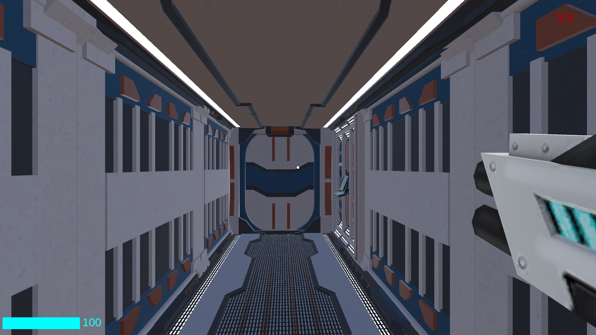
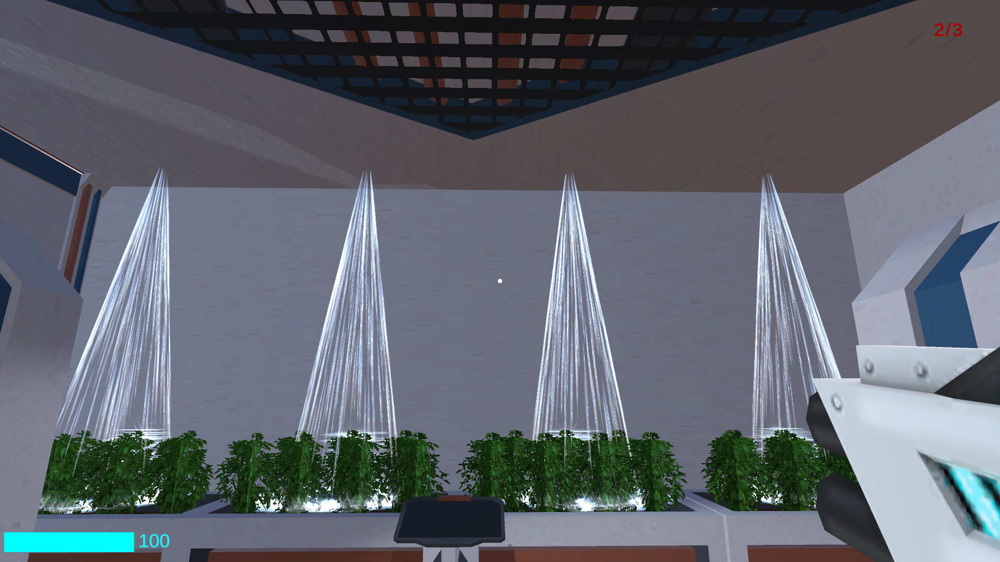

Future Assault
This project is a first-person shooter (FPS) prototype with sci-fi themes made with Unity3D, showcasing features such as NPCs AI using Finite State Machine, ray tracing for interactables, and gun aiming.
One of the highlights of this project is the implementation of intelligent NPCs a technique known as a Finite State Machine to With this technique the NPCs within the game possess autonomy and decision-making capabilities. Their behavior is governed by a series of states and conditions, allowing them to adapt and respond dynamically to the player's actions.
In addition this project also explores ray tracing for interactables and the gun system. It allows the player to interact with the ambient (open doors, pick up itens, water plants) and makes sure shooting will with the desired target. This attention to detail creates a immersive and interactive environment, encouraging players to engage with the game world in meaningful ways.
Moreover, this project presented an opportunity to delve into the new input system. This journey of learning the new input system turned out to be much smoother and enjoyable than anticipated.
You can check more and download the game on my github.
 